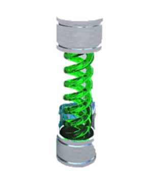
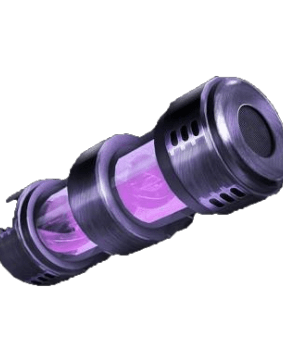
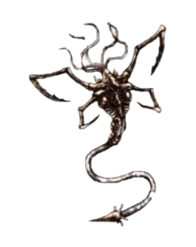

Virals
Virus T
The T virus operates similarly to most other viruses, but also has the abilities to animate dead tissue, to substantially mutate its host, and to infect nearly any tissue in any type of host. It animates dead tissue by killing and replacing any mitochondria in infected cells, and then combining with these cells to produce enough energy for motor and lower brain functions. The result is the creation of zombies.

Virus G
The Golgotha Virus or called Virus-G, is a new project carried out by the Umbrella Corporation to solve the errors of the T-virus and improve its mutagenic characteristics. It was developed by William Birkin, a scientist at the Umbrella Corporation, who was also a pioneer in the development of the T-virus. The first to reveal the secrets of the G-virus was Albert Wesker.

Uroboros
Uroboros, once it comes into contact with the cells of an organism and infected them, inserts its genes into the host's genome, in an attempt to fuse with the host. For those whose genetic sequence is compatible with the Uroboros, the combination is successful, granting him superhuman abilities. Those whose genomes are incompatible with the genetic assimilation of the virus, their cells are overtaken by Uroboros. The infected tissues mutate into tentacles, which absorb the host's body and any other organic matter.
The Plague
Humans infected with this parasite are called "cattle." These beings, apparently, are ordinary people since they are able to speak and act in coordination with other infected; However, these beings have symptoms that differentiate them from uninfected people, such as the following: Aggressive behavior towards strangers, Red or yellowish eyes, Coughing up blood, Deplorable dental health, Craziness, Aggressiveness, Pain resistance, Acts of cannibalism.
